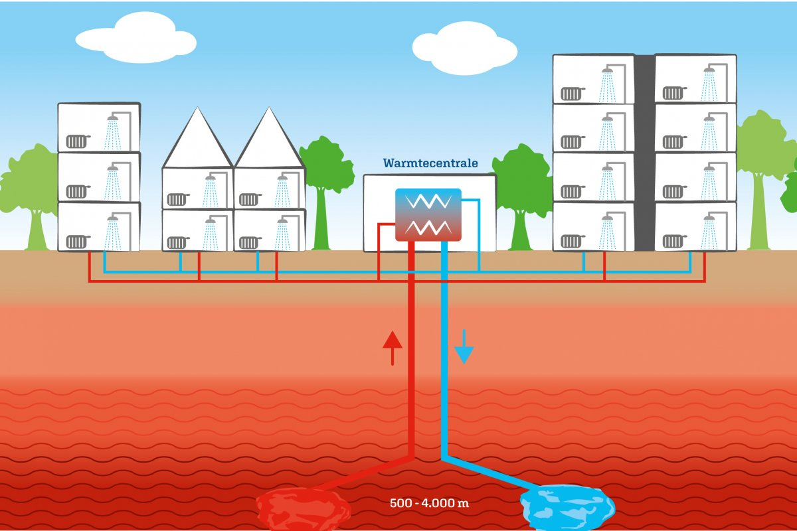

Geothermie
Nederland staat voor een uitdagende energietransitie. Voor een duurzame energievoorziening is het nodig het energiegebruik zoveel mogelijk te minimaliseren en gebruik te maken van hernieuwbare bronnen voor warmte, koude, elektriciteit en mobiliteit. We zijn dan ook steeds op zoek naar verschillende manieren om warmte op te wekken. En hierdoor voor groene energie te zorgen. Een niet zo bekend voorbeeld hiervan is geothermie.
Hoe werkt geothermie?
Geothermie (aardwarmte) maakt gebruik van warmte uit de ondergrond voor de verwarming van huizen, kassen en industrie. Er wordt vanuit minimaal 500 meter onder de grond warm water opgepompt, dit wordt uiteindelijk gebruikt om leidingwater te verwarmen. De temperatuur loopt op met de diepte: hoe dieper onder de grond hoe warmer. Om het warme water uiteindelijk boven de grond te krijgen worden er twee putten gemaakt. Een productieput om het warme water bovengronds te krijgen, waarna de warmte via een warmtewisselaar in een warmtenet stroomt. Het warmtenet loopt in de ondiepe ondergrond naar kassen, gebouwen, huizen en industrie.
Hoe werkt geothermie?
De tweede injectie-put brengt het afgekoelde water weer terug naar het oorspronkelijke reservoir, waar het water weer opwarmt. De druk in de ondergrond blijft op deze manier constant. Samen vormen deze twee putten een zogeheten doublet. Het is dus een soort oneindige cirkel die maar doorloopt. Je kan daarom ook zeggen dat geothermie een hernieuwbare energiebron is: de energie uit de bron wordt voortdurend vervangen. En de aardwarmte raakt dus nooit op.
Hoe werkt geothermie?
Geothermie in Nederland
Geothermie is nog niet zo groot in Nederland. Op dit moment hebben we ongeveer z'n 24 van deze warmte pompen. En zijn ze nog druk bezig met de ontwikkelingen hiervan. Door geothermie kan je dus warmte opwekken zonder dat je gebruikt maakt van gassen. Dit is natuurlijk veel beter voor de natuur en voor de wereld. Je woning wordt dan verbonden aan een unit (dat is de warmtebron), in deze unit komt de aardwarmte binnen en brengt het verder naar de huizen die verbonden zijn. Alleen om de aardwarmte op de juiste plekken te brengen is er een warmte netwerk nodig. Dit is momenteel nog niet aanwezig en moet deze ontwikkeling moet nog verder worden uitgewerkt.
Geothermie in Nederland
Geothermie groeit op dit moment zo snel dat het kan gaan bijdragen aan het verduurzamen van Nederland. Ook is hier de Nederlandse overheid hier van overtuigd en krijgen bedrijven die naar aardwarmte boren subsidies. Zo hoopt de geothermie-sector dat ze in 2050 kunnen groeien naar 700 installaties. Waardoor je ook vele huishoudens kan voorzien van geothermie..